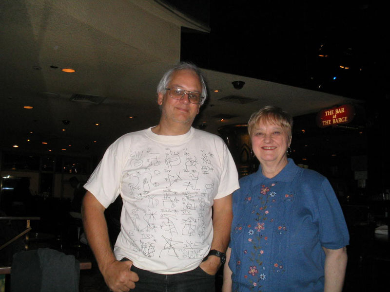

|
|
|
alt-usage-english.org |
| Home |
| Newsgroup |
| Intro Documents A B C D E F G |
| FAQ |
| FAQ Supplement |
| ASCII IPA |
| Audio Archive |
| Links |
| UCLE Corner |
| What's New? |
| Search |
| Site Map Where am I? |
| Contact |
|
|
|
IMPORTANT NOTICE: This site is scheduled for closure in September 2016.
If you have any comments about the closure, please post them to the newsgroup. See this page for information about the newsgroup and how to post to it. Las Vegas Boink13 November 2005
|
|
 David: The Las Vegas mini-boink was held in Caesar's Palace (or is that Cesar's Palace?) on the afternoon of Sunday 13th November 2005. In attendance were David (the Omrud), Maria Conlon and Maria's husband Brian. Maria is the one on the right. Dena Jo was expected but she had car trouble and wasn't able to drive over from Arizona. After a slightly late start because of an incomplete understanding by one of us of what was the "main entrance", the protagonists found a reasonably quiet bar with a spare table. Some of us may consider drinks in London to be expensive, but they're nothing on Caesar's Palace. No matter, a lively and entertaining couple of hours were had by all. Discussions were wide ranging, including other AUE contributors, the geography of the UK, other AUE contributors, our children (and where we have them, grandchildren), other AUE contributors, the nature of Las Vegas itself, other AUE contributors, and other AUE contributors. There was probably a lot more discussed which might have been of significant interest but we didn't make any contemporaneous notes and so, M'Lud, that's all we can recall of the proceedings. Maria:
|
|